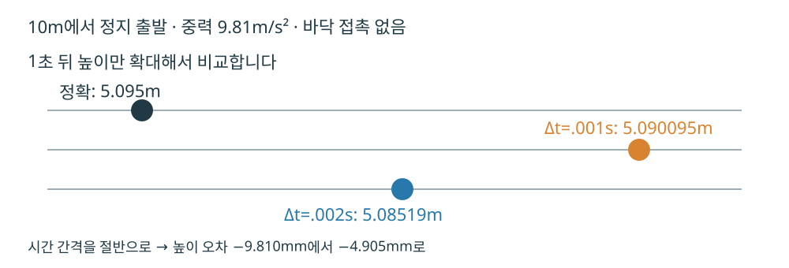

계산기가 맞는지 확인할 때 우리는 어려운 식부터 넣지 않습니다. 1+1을 넣어 봅니다. 시뮬레이터도 같습니다. 답을 이미 아는 문제를 넣어 보고, 어긋나는 크기와 방향을 읽습니다. 이번 차시의 채점 문제는 두 개입니다. 10m에서 놓은 공과 20° 비탈 위의 상자입니다.
코드 블록을 내 컴퓨터에서 돌리는 방법은 예제 실행하기에 있습니다.
이 장면에서 고정한 조건
앞 차시에서 만든 공 장면을 그대로 씁니다. 고정하는 것은 중력 9.81m/s², 처음 높이, 처음 속도 0입니다. 바꾸는 것은 한 걸음의 길이 Δt이고, 그때 오차가 어떻게 변하는지가 관찰 대상입니다.
답을 아는 문제로 채점하기: 낙하와 마찰

공을 10m 높이에서 놓고 1초 기다립니다. 공기 저항과 충돌이 없다면 정답은 식으로 바로 나옵니다.
z는 높이(m), z0는 처음 높이 10m, g는 아래로 당기는 중력의 크기 9.81m/s², t는 시간(s)입니다. 1초 뒤 정확한 높이는 10−4.905=5.095m, 속도는 −9.81m/s입니다. 이제 같은 문제를 0.002초씩 걸어서 풀어 봅니다.
MuJoCo의 기본 적분은 반암시적 오일러입니다. 먼저 속도를 바꾸고, 바뀐 속도로 위치를 바꿉니다. 매번 작은 계단을 내려가듯 계산하므로 정확한 곡선과 조금 차이가 납니다. 이 조건에서 높이 오차(계산−정확)는 −½gΔt·t입니다. 계산이 정확한 값보다 낮게 나온다는 뜻입니다.
| 한 걸음 Δt | 1초 뒤 높이 오차(교안) | 속도 오차(교안) |
|---|---|---|
| 0.002s | −9.810mm | 6.4×10−14m/s |
| 0.001s | −4.905mm | 9.8×10−14m/s |
| 0.0005s | −2.453mm | 7.6×10−13m/s |
걸음을 절반으로 줄이면 이 문제의 높이 오차도 절반입니다. Δt=0.004초라면 −½×9.81×0.004×1=−0.01962m, 즉 −19.62mm가 됩니다. 속도 차이는 부동소수점 반올림 수준이라 사실상 0입니다. 다만 이 비례 법칙을 모든 물리 문제와 모든 적분기에 그대로 적용하지는 않습니다.
20° 미끄럼틀 위의 상자
중력은 아래로 끌고 마찰은 미끄러짐을 막습니다. 마찰계수 μ가 tan20°≈0.364보다 작을 때, 이상적인 이 모델에서는 아래로 미끄러집니다.
θ는 비탈 각도, μ는 단위 없는 마찰계수, a는 비탈 아래 방향 가속도(m/s²)입니다. 상자는 멈춘 상태에서 출발합니다. μ가 임계값보다 크면 위 식의 값이 음수가 되는데, 이것을 “상자가 저절로 위로 올라간다”로 읽지 않고 정지 상태로 둡니다.
| μ | 1초 이동 이론 | 교안 시뮬레이션 |
|---|---|---|
| 0.1 | 1.217m | 1.219m |
| 0.3 | 0.295m | 0.297m |
| 0.4 | 0m | 0.004m |
| 0.6 | 0m | 0.002m |
이론과 시뮬레이션이 0.002m 안쪽으로 맞는 줄은 좋은 검산입니다. 그런데 멈춰야 하는 μ=0.4와 0.6에서 상자가 몇 mm 기어 내려갔습니다. 접촉이 아주 딱딱하지 않고 조금 말랑하게 계산되기 때문에 생기는 차이입니다. 이 표는 교안의 특정 마찰 설정과 단순 식을 비교한 것이며, 현실의 모든 정지·운동 마찰을 하나의 μ로 설명한다는 뜻이 아닙니다.
기어 내려가는 것을 줄이려면: 마찰 원뿔 설정
위 표의 μ=0.4, 0.6 상자는 정지 마찰이 완벽하게 붙잡지 못해 1초에 4 mm, 2 mm 기어 내려갔고, 시간을 더 주면 같은 빠르기로 계속 내려갑니다. 물건을 오래 쥐는 로봇 손이라면 문제가 됩니다. 같은 장면(b09_slope.py의 장면)에 아래 한 줄을 넣어 다시 돌렸습니다.
<option cone="elliptic" impratio="10"/>1초 이동이 μ=0.4에서 0.004 m → 0.0002 m, μ=0.6에서 0.002 m → 0.0002 m로 줄었습니다. 미끄러져야 하는 μ=0.1과 0.3은 1.219 m, 0.296 m로 거의 그대로입니다(식은 1.217 m, 0.295 m). 마찰을 원뿔 모양으로 더 정확히 계산하고, 마찰 방향 제약을 더 단단하게(impratio) 다루는 설정입니다. 시뮬레이터는 넣은 숫자와 설정만큼만 맞습니다.
결과 하나만 보고 “정답”이라고 하지 않는 이유
바닥 접촉은 아주 딱딱한 쿠션처럼
현실의 물체도 닿는 순간 미세하게 변형되지만 눈에 잘 보이지 않습니다. 시뮬레이터의 부드러운 접촉은 물체가 조금 파고든 상태를 허용하면서 그 깊이로 힘을 계산합니다. 그래서 조금 겹쳐 보인다고 접촉 계산이 아예 없는 것은 아닙니다. 반대로, 튀어 오르는 높이를 보고 접촉 설정을 판단할 수도 있습니다.
숫자·공식·코드로 이어 보기
| solref 설정 | 최대 파고듦 | 다시 뜬 높이 |
|---|---|---|
| "0.02 1" 기본값 | 0.027m | 0.000m |
| "0.02 0.1" 덜 감쇠 | 0.021m | 0.043m |
| "-10000 -10" 직접 강성·감쇠 형식 | 0.039m | 0.650m |
양수 형식의 첫 수는 접촉이 회복되는 시간 척도, 둘째 수는 감쇠비입니다. 감쇠는 흔들림을 줄이는 효과입니다. 음수 형식은 강성을 직접 지정하는 다른 표현이므로 −10000초라는 뜻이 아닙니다. 두 형식은 같은 자리에 다른 문법을 쓰는 것이지, 같은 값의 부호만 바꾼 것이 아닙니다.
MuJoCo는 계산을 안정적으로 하려고 접촉을 일부러 조금 말랑하게 다룹니다. 그 정도는 solref와 함께 solimp로도 조절합니다. 아무것도 적지 않은 geom을 이 컴퓨터에서 읽으면 solref=[0.02, 1], solimp=[0.9, 0.95, 0.001, 0.5, 2]입니다. 접촉을 너무 단단하게 하면 시간 간격과 안정성에서 본 불안정이 생길 수 있어, 이 수업은 기본값을 두고 solref 두 줄만 바꿔 봅니다. 현실의 단단한 공은 이렇게 파고들지 않으므로, 시뮬레이션과 현실의 접촉이 조금 다르다는 점은 기억해 둡니다.
이 표는 같은 실험에서 설정만 바꾼 교안 결과입니다. “값을 세게 하면 언제나 덜 파고든다” 같은 순서로 외우지 마십시오. 시간 간격, 접촉 정규화, 감쇠가 함께 작용하므로 파고듦과 튀는 높이를 둘 다 확인해야 합니다.
다시 뜬 높이가 0.000m로 출력됐다면 공이 움직이지 않았다는 뜻일까?
계산된 장면을 카메라로 찍기
물리 상태가 계산되어 있어도 이미지는 따로 만들어야 합니다. 장면에 미리 이름 붙여 둔 카메라를 쓸 수도 있고, 코드에서 자유 카메라의 위치를 정할 수도 있습니다.
자유 = mujoco.MjvCamera()
자유.lookat[:] = [0, 0, 0.1]
자유.distance = 2.0
자유.azimuth = 45
자유.elevation = -35
mujoco.mj_forward(모델, 데이터)
렌더러.update_scene(데이터, camera=자유)
이미지 = 렌더러.render()MjvCamera(): 카메라 설정을 담을 객체.lookat: 바라볼 지점의 좌표. 카메라가 놓인 위치 그 자체는 아닙니다.distance: 그 지점까지 거리 2m.azimuth: 수평 방향에서 45° 돌려 봅니다.elevation: 여기서는 −35°로 내려다봅니다. 카메라 각도는 도 단위이며 관절 qpos의 라디안과 다릅니다.forward: 찍기 전에 현재 상태로 계산값을 맞춥니다.update_scene: 어떤 상태를 어떤 카메라로 그릴지 전달합니다.render: RGB 숫자 배열을 만듭니다.
장면에 박아 두는 카메라와 큰 그림 찍기
XML 안에 이름 붙은 <camera>를 넣으면 코드에서 camera="side"로 고를 수 있습니다. 위치는 pos, 방향은 xyaxes라는 여섯 숫자로 줍니다. 앞 세 개는 카메라의 x축(화면 오른쪽), 뒤 세 개는 y축(화면 위)을 세계 좌표로 적은 것이고, 회전 행렬의 열이 새 축의 방향이라는 1일차 이야기와 같습니다.
<camera name="side" pos="0 -2 0.55" xyaxes="1 0 0 0 0.05 1"/>이 카메라의 x축은 (1, 0, 0), y축은 (0, 0.05, 1)입니다. 카메라는 자기 −z 방향을 보는데, 이 컴퓨터에서 데이터.cam_xmat로 읽으니 보는 방향이 (0, 0.999, −0.050)이었습니다. 앞쪽(+y)을 보면서 아주 조금 아래를 향합니다.
또 하나. 렌더러는 기본으로 640×480까지만 찍습니다. mujoco.Renderer(모델, 600, 800)처럼 더 큰 그림을 요구하면 Image width 800 > framebuffer width 640 오류가 나고, 해결은 XML에 크기를 적는 것입니다.
<visual><global offwidth="800" offheight="600"/></visual>이렇게 적고 같은 호출을 하면 이미지 모양이 (600, 800, 3)으로 나옵니다(오너의 v04_joint_vs_actuator.py도 이 줄을 씁니다).
교안의 배열 모양 (240,320,3)은 세로 240픽셀, 가로 320픽셀, 색 채널 3개입니다. uint8은 각 채널을 0~255 정수로 담는 형식입니다. 영상 인식 모델이 입력으로 받는 이미지도 결국 이런 배열입니다.
여기서 시간 감각이 하나 갈라집니다. 물리 계산은 0.002초마다 하지만 영상은 약 1/30초마다 찍습니다. 두 간격은 서로 나누어떨어지지 않으므로, “다음 촬영 시각에 실제 시각이 도달했는지”를 검사하며 찍습니다. 교안은 이렇게 46장을 찍어 6장을 골라 시간순 격자로 배치했습니다. 계산 횟수와 사진 장수가 별개라는 점이, 나중에 센서 주기와 제어 주기를 다룰 때 다시 나옵니다.
렌더링하지 않아도 낙하 계산을 할 수 있을까?
직접 실행 문제: 손으로 먼저 예상하기
세 문제 모두 “실행 전에 예상하고, 실행 뒤 차이를 설명하기”가 목적입니다. 아래 숫자는 주어진 식으로 계산한 예상값이며 MuJoCo 실행 결과가 아닙니다.
① 낙하 간격을 0.004초로 바꾸면 높이 오차는?
t=1s, g=9.81m/s²에서 −½×9.81×0.004×1=−0.01962m, 즉 −19.62mm입니다. 0.002초의 −9.81mm보다 두 배이므로, 시뮬레이션 높이는 정확한 5.095m보다 더 낮게 나올 것이라고 예상합니다.
간격들 = [0.004, 0.002]
# 각 간격을 model.opt.timestep에 적용하고 1초까지 진행
# 계산높이 - (10 - 0.5 * 9.81 * 1**2)를 비교② 마찰 0.2, 0.35, 0.37이면?
임계값은 약 0.364입니다. 따라서 0.2와 0.35는 아래로 미끄러지고 0.37은 이상적인 식에서는 멈춥니다. 1초 이동거리 예상은 각각 약 0.756m, 0.0644m, 0m입니다. 임계값 근처는 작은 차이를 비교하는 문제라, 접촉의 부드러움과 수치 오차가 상대적으로 크게 보입니다.
theta = np.deg2rad(20)
a = max(0.0, 9.81 * (np.sin(theta) - mu * np.cos(theta)))
예상거리 = 0.5 * a * 1.0**2첫 줄은 도를 라디안으로, 둘째 줄은 가속도를, 셋째 줄은 정지 상태에서 1초 동안 움직인 거리를 계산합니다. max는 이 문제의 정지 조건을 반영합니다.
③ 상자 size를 0.05씩으로 줄이면 질량은?
전체 한 변은 0.1m입니다. 부피 0.001m³×밀도 1000kg/m³=1kg이고, 앞의 8kg의 1/8입니다. 명시적인 mass가 따로 있으면 이 밀도 계산 대신 mass 설정이 적용되므로 해당 코드도 확인해야 합니다.
cd C:\code\src\robo\vol3\04-mujoco-basics
..\..\.venv\Scripts\python.exe b08_free_fall.py첫 줄은 예제 폴더로 이동, 둘째 줄은 MuJoCo가 들어 있는 .venv 파이썬으로 b08_free_fall.py를 실행합니다. 이 컴퓨터에서 실행하면 줄 네 개가 나오고 첫 줄은 간격 0.002초: 높이 차이 -9.810mm (예측 -9.810mm), 속도 차이 6.4e-14m/s였습니다. 이 학습 페이지를 여는 것만으로 MuJoCo가 설치되지는 않습니다. 환경과 실행 방법은 예제 실행하기를 보세요.
확인 문제: step 직후 xpos는?
교안의 기본 예제에서 mj_step을 부른 직후 데이터.body(1).xpos를 읽으면 무엇이 나올까요? 앞 차시의 순서를 떠올리며 답해 보십시오.
숫자·공식·코드로 이어 보기
- 걸음을 마친 지금 상태의 위치
- 한 걸음 전 상태의 위치
- 처음 놓은 위치
- 0
정답과 이유
둘, 한 걸음 전 상태의 위치. 이 예제에서는 위치 계산을 먼저 하고 맨 끝에 qpos를 적분하기 때문입니다. 현재 qpos와 맞는 위치를 읽으려면 mj_forward를 부른 뒤에 읽습니다. 다만 이것을 “적분기와 필드에 관계없이 모든 값이 항상 한 단계 전”이라는 법칙으로 일반화하지는 않습니다.
9차시를 하나의 실험 절차로 묶기
이제 이 차시에서 확인한 것들을 한 줄씩 정리해 둡니다. box size는 반 길이이고, 질량은 설정한 밀도와 부피에서 계산됩니다. Model은 공유 설정이고 Data는 실험별 상태입니다. 관절 타입마다 qpos·qvel 칸 수가 다릅니다. 작은 시간 간격도 오차를 만들고, 접촉은 조금 말랑합니다.
숫자·공식·코드로 이어 보기
화살표를 따라 같은 낙하 공의 값을 놓아 보세요. 높이10m로 시작해0.002초씩500걸음이면1초입니다. forward뒤 높이5.08519m를 읽고 정확식5.095m와 빼면−9.810mm입니다. 촬영은 이 상태를 보여 주며 카메라 각도는 이 높이 검산을 바꾸지 않습니다.
스스로 진단하기: “공이 너무 무겁고 바닥을 조금 파고들어요.”
먼저 크기의 반 길이/반지름을 잘못 넣지 않았는지, density 또는 mass가 무엇인지 확인합니다. 그다음 timestep과 접촉 설정을 봅니다. 원인을 확인하기 전에 중력과 모든 설정을 동시에 바꾸면 무엇이 문제였는지 알 수 없게 됩니다.
교안이 따로 지정한 읽기 과제는 4.2절 기본값과 재질, 4.4절 대화형 뷰어입니다. 여기서 실습한 범위와 읽기 과제를 구분해 두십시오. 다음 차시는 이 공에 모터와 센서를 달아, 팔로 상자를 미는 장면으로 넘어갑니다.
따라 해 보기 (선택): 오차를 mm로 계산하기
본문의 표를 직접 재현해 보는 계산입니다. 부호가 아니라 크기를 묻는 문제이니, m를 mm로 바꾸는 것까지 확인하십시오. 먼저 종이에 예상값을 적고 나서 답을 확인하면 좋습니다.
두 번째는 시뮬레이션 결과가 이론과 어긋났을 때 무엇을 먼저 볼지 묻습니다. 값을 의심하기 전에 조건을 의심하는 순서를 연습합니다.
실제로 실행한다면 예상값, 측정값, 차이를 세 열로 기록하십시오. 값이 달라도 곧바로 버그나 새로운 물리라고 단정하지 않습니다.
내 컴퓨터에서 돌려 보기
아래 출력은 이 컴퓨터(MuJoCo 3.17.0)에서 오너의 예제를 직접 돌려 얻은 값입니다. 명령은 줄 두 개(폴더로 이동 + 실행)이고 예제 실행하기에 이유가 있습니다. 그림 파일을 저장하는 예제는 예제 폴더에 PNG가 생기지 않도록 임시 폴더(cd $env:TEMP)에서 전체 경로로 돌립니다.
b08_free_fall.py · 낙하 검산: 걸음 길이와 높이 오차
cd C:\code\src\robo\vol3\04-mujoco-basics
..\..\.venv\Scripts\python.exe b08_free_fall.py간격 0.002초: 높이 차이 -9.810mm (예측 -9.810mm), 속도 차이 6.4e-14m/s
간격 0.001초: 높이 차이 -4.905mm (예측 -4.905mm), 속도 차이 9.8e-14m/s
간격 0.0005초: 높이 차이 -2.453mm (예측 -2.452mm), 속도 차이 7.6e-13m/s
간격 0.004초: 높이 차이 -19.620mm (예측 -19.620mm), 속도 차이 5.3e-15m/s읽을 곳: 12~16행이 간격 네 개를 돌며 1초 낙하를 계산하고, 20행이 시뮬레이션과 식 −½gΔt·t의 차이를 보여 줍니다. 간격을 절반으로 줄이면 오차도 절반(−9.810 → −4.905mm)입니다.
b09_slope.py · 20° 비탈: 마찰별 1초 이동거리
cd C:\code\src\robo\vol3\04-mujoco-basics
..\..\.venv\Scripts\python.exe b09_slope.pytan 20도 = 0.364 (마찰 계수가 이보다 크면 미끄러지지 않는다)
마찰 0.1: 1초 동안 1.219m 내려감 (식 ½at² = 1.217m)
마찰 0.3: 1초 동안 0.297m 내려감 (식 ½at² = 0.295m)
마찰 0.4: 1초 동안 0.004m 내려감 (식 ½at² = 0.000m)
마찰 0.6: 1초 동안 0.002m 내려감 (식 ½at² = 0.000m)
마찰 0.2: 1초 동안 0.757m 내려감 (식 ½at² = 0.756m)
마찰 0.35: 1초 동안 0.074m 내려감 (식 ½at² = 0.064m)
마찰 0.37: 1초 동안 0.020m 내려감 (식 ½at² = 0.000m)읽을 곳: 8행이 tan20° = 0.364, 10~29행이 마찰값마다 모델을 새로 만들어 1초 이동거리와 식 ½at²을 비교합니다. 마찰 0.4와 0.6에서 식은 0인데 몇 mm 내려가는 것이 접촉의 말랑함입니다. 0.35는 0.074 대 0.064로 경계 근처의 차이가 가장 큽니다.
b10_bounce.py · 접촉 solref 세 가지
cd $env:TEMP
C:\code\src\robo\.venv\Scripts\python.exe C:\code\src\robo\vol3\04-mujoco-basics\b10_bounce.py기본값 (0.02 1): 가장 깊이 파고듦 0.027m, 다시 뜬 높이 0.000m
덜 감쇠 (0.02 0.1): 가장 깊이 파고듦 0.021m, 다시 뜬 높이 0.043m
스프링 직접 (-10000 -10): 가장 깊이 파고듦 0.039m, 다시 뜬 높이 0.650m읽을 곳: 10~29행이 solref 세 값으로 공을 떨어뜨려 가장 깊이 파고든 정도와 다시 뜬 높이를 잽니다. 파일은 bounce.png도 저장합니다.
b11_render.py · 카메라로 그림 만들기
cd $env:TEMP
C:\code\src\robo\.venv\Scripts\python.exe C:\code\src\robo\vol3\04-mujoco-basics\b11_render.py이미지: (240, 320, 3) uint8
저장: render_cameras.png읽을 곳: 24행의 mj_forward를 부른 뒤 렌더하고, 29행이 배열 모양 (240, 320, 3) uint8을 출력합니다.
b12_frames.py · 46프레임을 찍어 격자와 GIF로
cd $env:TEMP
C:\code\src\robo\.venv\Scripts\python.exe C:\code\src\robo\vol3\04-mujoco-basics\b12_frames.py찍은 프레임 수: 46
저장: bounce_frames.png
저장: bounce.gif읽을 곳: 33~35행이 계산은 0.002초마다, 촬영은 약 1/30초마다 하며 촬영 직전에 forward를 부릅니다. 46장을 찍고 bounce_frames.png, bounce.gif를 저장합니다.
수업 근거/원문 보기
표의 수치는 교안에도 있는 값이고, 아래 ‘내 컴퓨터에서 돌려 보기’의 b08~b12를 이 컴퓨터에서 돌려 같은 값을 확인했습니다. 식으로 계산한 값은 검산입니다.
- 교안 9차시: 49쪽 · 50쪽 · 51쪽 · 52쪽 · 53쪽 · 54쪽
- 교과서: PDF 159쪽 · PDF 165쪽 · 4.3~4.4절 원고
- 예제(오너 폴더
C:\code\src\robo\vol3\04-mujoco-basics\): b08_free_fall.py, b09_slope.py, b10_bounce.py, b11_render.py, b12_frames.py (이 컴퓨터에서 실행해 확인)